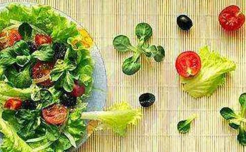

前言 蒋劲松先生现年57岁，清华大学副教授，中国人民大学哲学博士。下文是蒋先生写于不久前的文章的一个集合。中国是一个求同的社会环境，文革时打倒异己分子的
中国大陆目前
这是因为素食者长期以来受到歧视，习惯了，以为别人不给自己提供素食是正常的。结果，素食者不坚持自己的要求，商家、店家也不知道还有素食者群体的存在，也就忽略了这一消费市场。如此一来，素食者素食环境更趋恶劣，又影响了许多潜在的素食者，甚至使得许多素食者因为太不方便又返荤，这样素食者人数更少，素食的市场进一步下降……
这种恶性循环很大程度上，其实是素食者自己的责任。作为小众群体，更要坚持自己的要求和主张，这样别人才会尊重你的理念和生活方式。在这一方面，素食者应该好好学习穆斯林。
我们可以看到每所大学、工厂都有清真食堂，也从来没有人敢劝穆斯林吃猪肉。但是，由于许多素食者过于低调，不够坚持，劝素食者吃肉的现象却屡见不鲜。中国那么多大学，学生、教工食堂连提供素食窗口的大学都很少。
大多数人素食都是基于动物保护、
这不仅是维护自己的权利，更是在传播健康、慈悲、环保的生活方式，是在提供正能量，难道不是很光荣的事吗？许多人原来不知道素食的好处，如果身边、饭桌的邻座有素食者，好奇之下，他们在交流中可以开阔眼界，获得新知，这不是自利利他的善举吗？
素食光荣，素食慈悲，素食利他，素食者不需要抱歉。
恒顺众生？素食的佛教徒别拿 由于中国社会中普遍缺乏人权观念，许多人都不尊重他人的个人
但是，有些佛教徒往往不
许多时候，他们的论调会给人一种感觉，如果无法既吃素又不让父母家人不生烦恼，那就暂时不要素食。还有许多人认为素食仅仅是个人的选择和修养，反对在公共空间就素食议题展开辩论，因为他们意识不到动物伦理学的普遍性和素食议题的公共性。
结果，许多人因为无法一下子同时做到既坚持素食又不引起争论，他就很可能放弃素食。因为在一个肉食的社会中，肉食者是“正常人”，是一种默认的存在，许多肉食者也可能在许多地方和家人关系不是那么和谐，但是没有人会因此而批评他不该肉食，也不会不加分析地一定认为是他单方面的问题。而如果一个素食者与家人存在一些争论、矛盾，就会被认为是素食的原因，是素食者的问题。
这种责备贤者的态度，要求素食者上来就必须是大
最离谱的是，有佛教徒宣扬，假如家人一定要吃肉，必须满足其愿望，甚至可以为其
正因为长期以来广大素食者（主要是佛教徒）有一种错误的想法，害怕争论，害怕别人的非议，不愿意凸显乃至暴露自己素食的生活方式，过于低调，不愿、不敢坚持自己的权利，素食者成为市场上的隐形消费者，许多厂商根本不知道素食人群的存在，使得长期以来大陆社会上缺乏对素食者应有的尊重，素食环境非常恶劣，坚持素食也就变得不该有的艰难。
争取权益 素食者应当光明磊落理直气壮讲一个实际的例子：我有一位在大学教书的佛友，她的孩子在中学读书，她和孩子都是素食者。学校为学生统一订午餐，当然不是素食。孩子拿到的饭菜没法吃。她就和学校沟通，看是否可以让孩子单独订餐，保证吃上素食。
学校听说居然有人要求素食，大吃一惊，闻所未闻！就问妈妈是信教吗？这位佛友和一般的佛子一样，不愿意公开自己的信仰，孩子也怕被同学评论，各种顾虑。她就很纠结，很低调地和老师商量，讲了关于“动物保护”、“素食主义”的各种论述。
但是，学校此前从没有听说过家长要求订素餐的事，认为只有穆斯林的孩子享有单独订餐的权利。就劝家长说：自己可以克服一下，三个菜中也有一个是素菜，可以多要一点，肉菜不吃就行啦。没法子，孩子只好吃了两天肉边菜午餐，心情很不好。这位妈妈更是心情难过，思来想去，这位妈妈一狠心，决定与学校摊牌，给老师写了这样一封信：
班主任老师您好，这两天我在跟校主管午餐的老师申请孩子的素食午餐，也跟您汇报一下进展及我家情况。我祖上是
孩子目前只能吃其中一个素菜。让孩子自己到外面买时间紧也不放心。校主管＊老师表示尽量和送餐公司商议，在此先感谢学校及主管老师懂
结果却出乎这位佛友的意外，立马搞定。老师的态度很好，表示要尊重宗教信仰。很快就与送餐公司联系，孩子马上就吃到了可口的素餐盒。第一天孩子吃的餐盒，虽然都是素食，但是餐盒本身与穆斯林餐的餐盒一样。
学校老师很贴心关怀学生，担心会搞混弄乱，又和送餐公司协调，现在孩子吃的餐盒是四菜餐盒，里面有四样素菜；而穆斯林孩子及其他同学都是三菜餐盒，这样在外观上也不会混淆。
一开始孩子被关注有些不太适应。现在慢慢适应了。其他同学看到她的素食餐盒中蔬菜都是本色，鲜艳诱人，而自己的荤食餐盒却是黑乎乎的，也想吃素餐盒。当然，孩子的家长肯定不会同意。
但无论如何，这些荤食的孩子心中也被种下了一颗素食的种子，将来很有可能发芽生长，没准哪一天就走上素食的道路了。所以，佛友努力坚持让孩子在学校中吃素，孩子顶住压力坚持公开素食，传播正能量，功德不可思议！
利益他人 做一个勇敢从上述案例中，我们可以看到在中国大陆，坚持素食，许多时候需要特立独行，需要一种无视他人异样眼光的勇气。环境是我们造就的，如果素食者自己不争取，人们就会无视素食者的权利。
我们素食者如果都能尽量坚持一下，多和社会上沟通，人们就会知道社会上有一群为了动物而坚持素食的人，他们会逐渐理解乃至敬佩素食者的选择，素食的社会环境就好很多。我认为这种特立独行，这种勇气，这种坚持，是中国大陆素食者今天非常稀缺的品质。
素食者的自我克制、隐忍，作为修